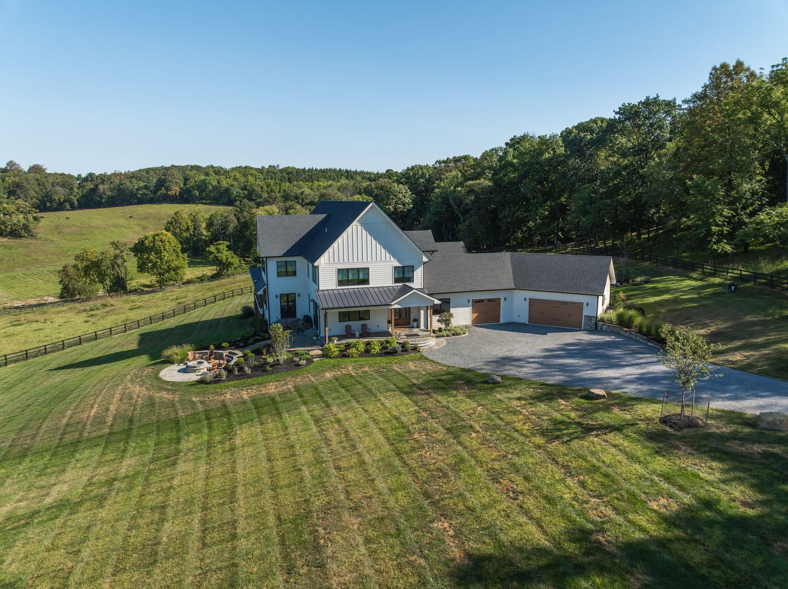

Where do you build in Loudoun County?
We're based in Leesburg and we build here. Total Build builds custom homes across Loudoun County on land you already own. Our built work in the county includes Four Tails, the timber-framed Mt. Craftsman house, and the Monte’s Run house, all on land our clients already owned. If your lot is in Loudoun, we can walk it with you and start from there.
How we build on your lot in Loudoun County
The county is part of the project.
Site walk and county feasibility
Western Loudoun in particular has ground that has opinions. This is the work that decides whether a lot is the bargain it looks like.
Design and permitting with Loudoun County
Design, engineering, and approvals run through the county, architects, structural engineers, and civil engineers. We work closely with them to help our clients.
The build
Your project manager runs the site and stays your point of contact.


Loudoun County FAQ
What does a custom home cost in Loudoun County?
We would be guessing if we gave you a number before we walked your lot. Cost follows what your land requires, how large the house is, and the finishes you choose. We start from your non-negotiables and price the upgrades separately.
How long does Loudoun County take to approve a build?
We don't control the county, but what we can tell you is who to submit to, in what order, and what they'll ask for, because we've been through it here repeatedly. We set out the schedule for your specific home at the start and keep you posted on where it stands.
Do you build on my lot?
Yes, and we'll walk it with you before we draw anything. If you haven't bought land yet, we'll help you find it.
Is an older Loudoun property cheaper to build on?
It often is! Land with an older house on it may already have a driveway, a well, a septic system, or a usable foundation footprint. Putting all that in from scratch on a raw Loudoun lot eats a serious share of the budget.
Start your Loudoun County custom home.
Start a conversation(703) 634-9211 · info@totalbuild.com · Leesburg, Virginia